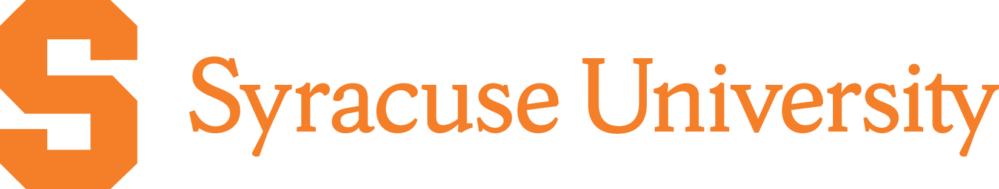

Minnowbrook ’26
Minnowbrook Analytic Reasoning Seminar 2026
June 3–6, 2026
Blue Mountain Lake, New York

Minnowbrook Analytic Reasoning Seminar 2026
June 3–6, 2026
Blue Mountain Lake, New York
The Minnowbrook Analytic Reasoning Seminar is a three-day, invitation-only seminar in upstate NY, with the goal of connecting invitees from academia, national labs, and industry interested in analytic reasoning, deductive databases, equality saturation, incremental view maintenance, and related topics.
We are currently inviting participants for the second iteration of the seminar, which will be held June 3-6, 2026 in Blue Mountain Lake, NY at Syracuse University's Minnowbrook Conference Center. The structure of the workshop includes longer-form (60-90-minute) talks spread across multiple days, with substantial downtime for hackathons, hikes, open-form discussions, games, water activities, etc.
The seminar covers scalable analytic reasoning broadly, including but not limited to:
The inaugural seminar was held May 25–28, 2025 at Blue Mountain Lake, NY, bringing together researchers and practitioners working on Datalog, logic programming, and declarative methods.
Prior attendees receive right of first refusal, but we actively seek a rotating crowd—including students, junior engineers, and industrial participants. If you are interested, please reach out to me directly.
If we are not acquaintances, please attach a CV and a brief description of why you are interested in the event. Unfortunately, due to limited space, I may not be able to accommodate all interested parties—I apologize in advance if that is the case.
No scholarships or travel funds are available at this time, but I will keep this site updated in case that changes.
Kristopher Micinski (kkmicins@syr.edu)
Syracuse University, Department of EECS